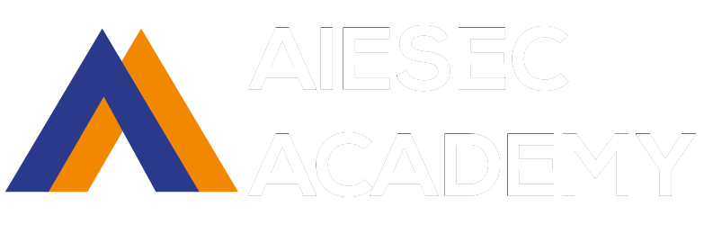

Faculties
AD
Trainee Management - GIP
Trainee Management - GCDP
AD for Dummies
Alumni
BoA and SG generation, implementation & maintenance
LLC Implementation and Engagement
Core
AIESEC Experience
How to consolidate a BoA
How to create a PODIO account
How to design the perfect implementation strategy to any iniciative
GMail Label Tutorials
University Approach
ER
How to do a call
How to get a successful meeting
Meet your Product
iGCDP
Raising a TN Form (ICX)
RaMaRe
Selling to NGO's
ABC of Exchange
iGIP
Raising a TN Form (ICX)
Auditing Process and Podio
Matching in myaiesec.net
Company and Trainee/ Acceptance Note
RA-MA-RE Process in myaiesec.net
Change TN from New to Available
MyAIESEC
How to create a MyAiesec.net Account
MyAIESEC.net: How to manage the platform
How to Approve Mail
How to assign Roles
How to create Teams
How to create search and edit Teams
How to make an Email
How to raise a Form
MKT
MyAIESEC.net: Common Problems
oGCDP
PODIO for oGCDP
International cooperation
MyAIESEC.net
Product understanding
X processes: publicity & raising
Exchange Management
oGIP
PODIO Basics I (OGX)
PODIO Basics II (OGX)
PODIO OGX Management (OGX)
PODIO MANUAL (OGX)
How to be the best EP manager
Audit
OPS Agenda
What is Global Talents?
Engineering segment
Exchange Processes
How to search for internship
XPP
IT Segment
Marketing Segment
How to fill EP AN
TM
Global Competency Model (advanced)
Goal Setting
Pipeline Management
PODIO
Talent Education
TM Role & 12 TM Process Introduction
Transition & Knowledge Management
Induction
Recruitment
ABC Talent Management
Tours
Get to know the AIESEC Platforms
Get the AIESEC Full Scoop
New LCP Tour
Resource Centers
oGIP
Finance
iGIP
Marketing
Mexico Leaders
Mexico Links
TM
Become A Mentor!
About
Content Submission
Content Update
Get your
free webform
from Podio